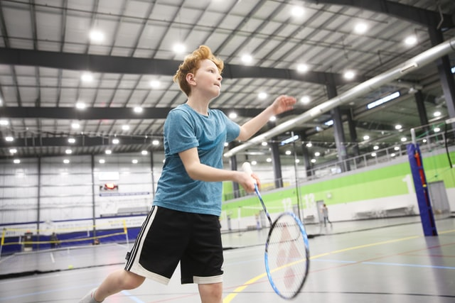
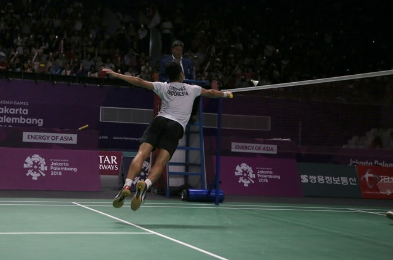
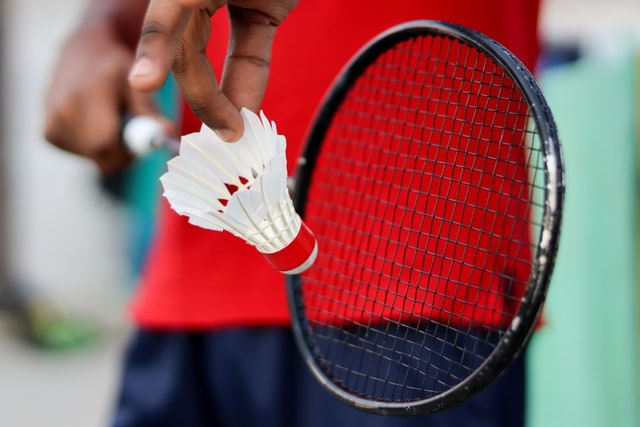

How To Play
Home
About
How To Play
Sign In/Out
Equipment
Sources
Rules:
A game starts with a coin toss whoever wins gets to chose weather they want to recieve or serve as well as, decide which side of the court they want to start on.
Players are NOT alowed to touch or hit the net with racket or part of body.
The 'steering wheel'(the 'bottom' or 'feathers' of a birdie/shuttlecock) can not be placed on the racket or be worn(used)
Players can not hit the birdie until it has passed the net and is on their side of the court
The serving must be done diagonally
The player recieving the serve can not touch the lines of the field until the server hits the birdie
A serve must always be hit below the waist
A player gets a point if they win they rally(an exchange of two or more players hitting the birdie back and forth)
The player wins an exchange when the birdie lands on the opposing sides court(inbounce) or if the opponent makes a mistake
players are only alowed one hit of the birdie before it goes over the net
if the birdie touches the ceiling its considered a fault
Rules addapted from:
https://www.sooperarticles.com/sports-articles/badminton-articles/10-rules-badminton-badminton-1687418.html
  